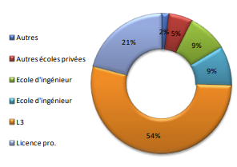

Dans notre établissement après le BAC, 54 % des élèves font une licence Informatique, 21% font une licences pro., 18% entre en école d'ingénieuret 5% vont dan sdes écoles privées. Ces informations nous sont données sur ce graphique ci-dessous que l'on peut retrouver sur le site de l'université dans la rubrique dédié au DUT Informatique.
Toujours selon le site de l'université, Les metier s accéssibles après notre IUT informatique sont :• Analyste programmeur • Développeur• Architecte logiciel• Gestionnaire réseaux• Développeur site web